安装Jenkins
注意：工作空间不能放在 Program Files (x86) 文件夹中，否则会出现打包vue项目时，public 下静态资源及文件夹内容丢失的问题（是因为Program Files (x86) 的权限问题？）
可修改 Jenkins 工作空间的目录：
打开Jenkins安装目录下的config.xml：C:\Program Files (x86)\Jenkins\config.xml
修改工作空间目录为：<workspaceDir>D:/jenkins/workspace/${ITEM_FULL_NAME}</workspaceDir>
安装插件
打开“系统管理”–“管理插件” 搜索相应插件名称，然后勾选安装
- gogs
- nodejs
- Publish over SSH
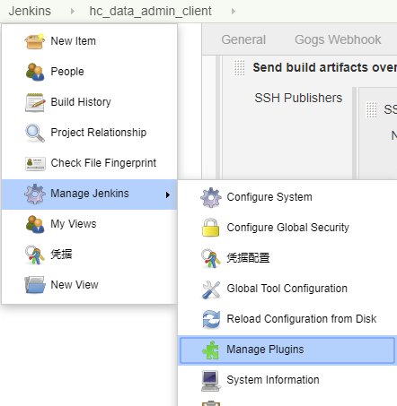
配置Nodejs
打开“系统管理”–“管理插件” 搜索 nodejs 然后勾选安装
打开“系统管理”–“Global Tool Configuration” 拉到底部 配置 node 版本
配置密钥
- 在Publish over SSH插件中配置本机的私钥，以便能远程连接服务器
参考：Jenkins配置Publish Over SSH讲解说明 - 在部署服务器的
authorized_keys文件中添加jenkins所在机子的公钥
注意：私钥的格式为MII开头的老OpenSSH格式，否则会报错如下↓↓↓
报错内容：Message [invalid privatekey: [B@6d1266]
解决：密钥格式不对，jenkins无法识别，用 ssh-keygen -t rsa -b 4096 -m PEM 命令重新生成密钥对 或者 用 PuTTYgen 工具将已有的私钥转换为老的OpenSSH格式
参考：
The problem is private key file format.
This is my private key header. This is from ssh-keygen on Macbook, not from puttygen.
2
3
> b3Blb....
>
“BEGIN OPENSSH” and “b3Blb….” means the “newer OpenSSH format”.
Jenkins or plugin failed to read this format. If you want to make “older” OpenSSH format, try this.
Or make your keys by using old ssh-keygen.
2
>
Your new private key should looks like this.
2
3
> MIIE....
>
ps. You can’t use ed25519 algorithm. Because ed25519 needs newer format.
新建任务
选构建一个自由风格的软件项目
增加构建步骤
将拉取过来的源码打包后建立压缩包
注意是： Execute Windows batch command
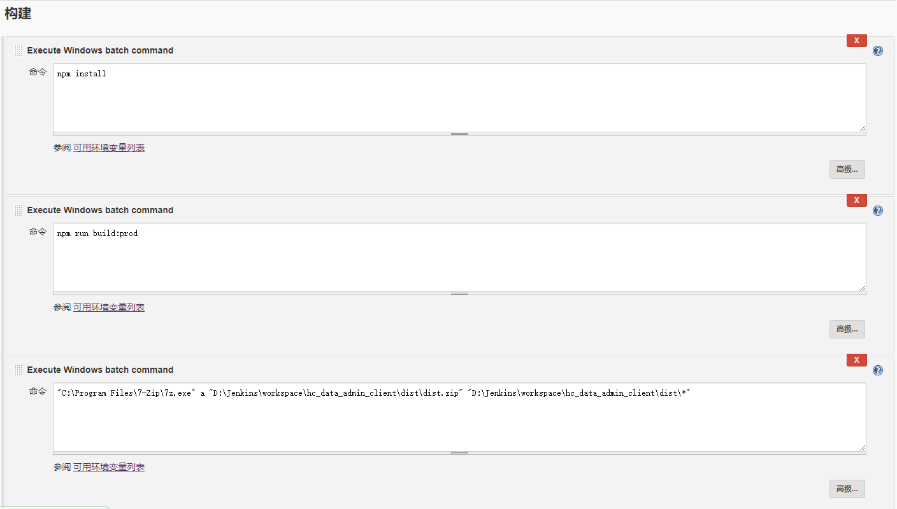
1 | "C:\Program Files\7-Zip\7z.exe" a "D:\Jenkins\workspace\hc_data_admin_client\dist\dist.zip" "D:\Jenkins\workspace\hc_data_admin_client\dist\*" |
增加构建后操作
用Publish over SSH将压缩包传到远程服务器
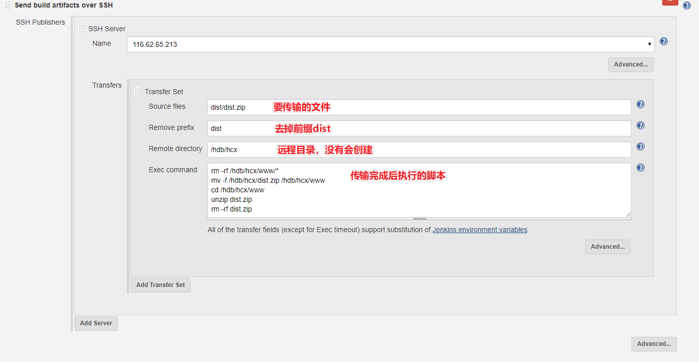
1 | rm -rf /hdb/hcx/www/* //删除目录下的所有文件和文件夹 |
Gogs webhook配置
1. 安装gogs插件
2. 在gogs仓库中配置
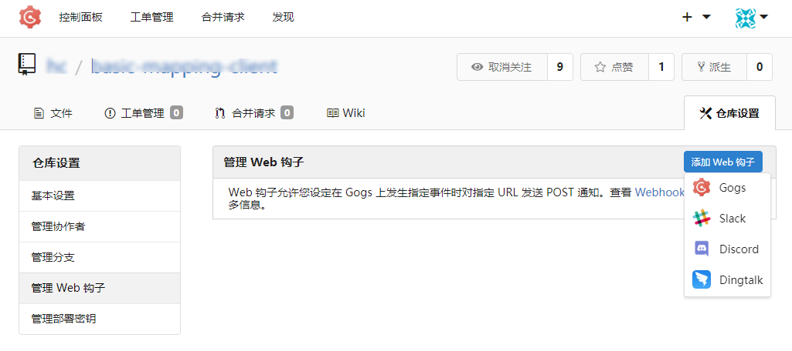
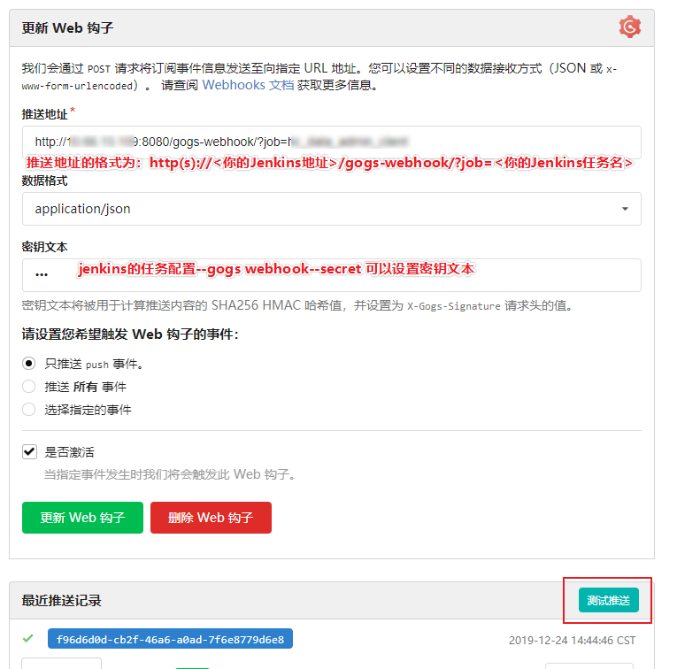
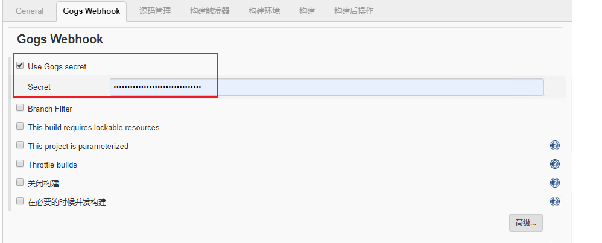
点击 测试推送，推送成功后会看到一条推送记录。
最终触发jenkins进行构建，蓝色表示构建成功。
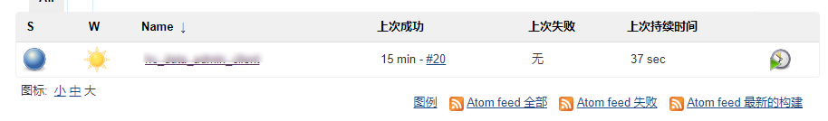
- 蓝色：任务最近一次构建是成功的
- 红色：任务最后一次构建是失败的
- 黄色：任务最后一次构建表示成功了，但不稳定（主要是因为有失败的测试）
- 灰色：任务从未被执行过或被禁用了
邮件通知
参考：
jenkins邮件插件中的内容参数设置
环境部署（八）：jenkins配置邮件通知
Jenkins配置邮件通知图文详解
自带的邮件通知功能比较简单，另安装插件 ： Email Extension Plugin
1. 全局配置
在 configure中设置：
1. Jenkins Location 👇
系统管理员邮件地址
必须填，不然会报错：
501 mail from address must be same as authorization user
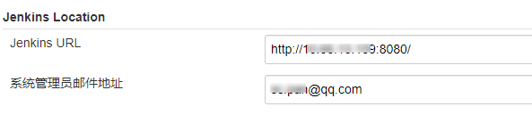
2. Extended E-mail Notification 👇
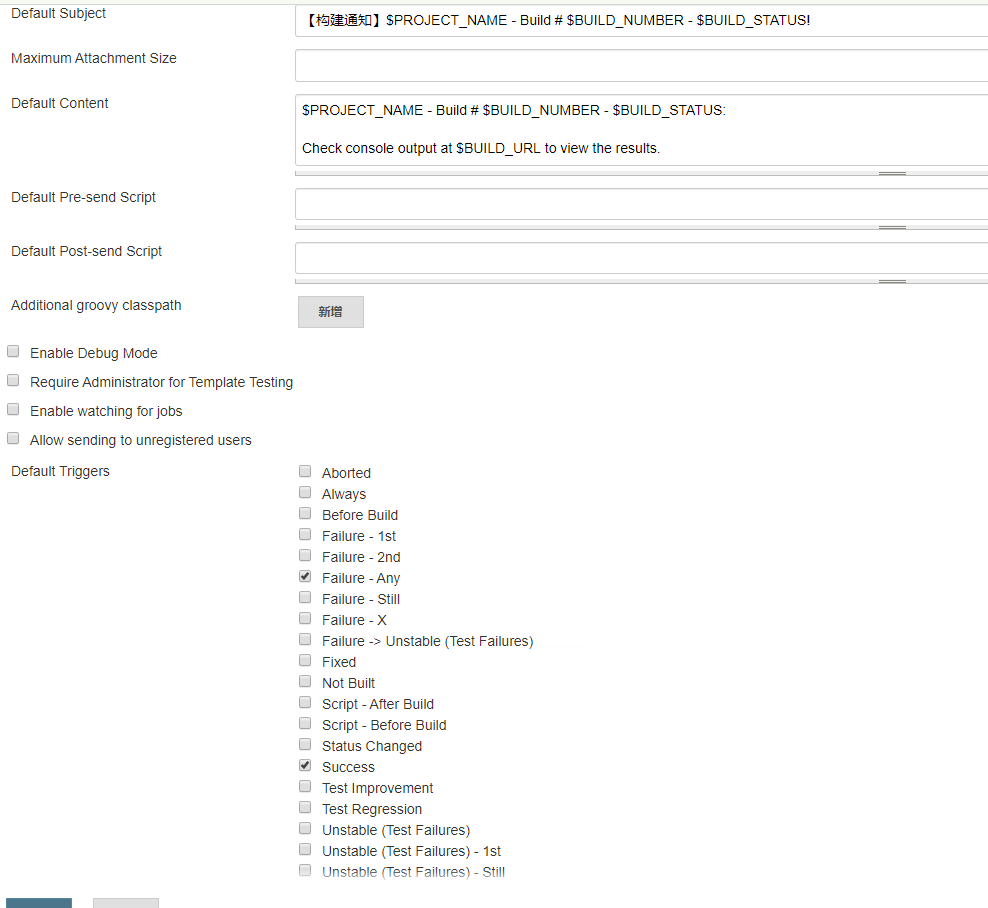
Default Content右键内容模板：1
2
3
4
5
6
7
8
9
10
11
12
13
14
15
16
17
18
19
20
21
22
23
24
25
26
27
28
29
30
31
32
33
34
35
36
37
38
39
40
41
42
43
44
45
46
47
48
49
50
51
52
53
54
55
56
57
58
59
60
<html>
<head>
<meta charset="UTF-8">
<title>${ENV, var="JOB_NAME"}-第${BUILD_NUMBER}次构建日志</title>
</head>
<body leftmargin="8" marginwidth="0" topmargin="8" marginheight="4" offset="0">
<table width="95%" cellpadding="0" cellspacing="0"
style="font-size: 11pt; font-family: Tahoma, Arial, Helvetica, sans-serif">
<tr>
本邮件由系统自动发出，无需回复！<br />
以下为${PROJECT_NAME }项目构建信息</br>
<td>
<font color="#CC0000">构建结果 - ${BUILD_STATUS}</font>
</td>
</tr>
<tr>
<td><br />
<b>
<font color="#0B610B">构建信息</font>
</b>
<hr size="2" width="100%" align="center" />
</td>
</tr>
<tr>
<td>
<ul>
<li>项目名称 ： ${PROJECT_NAME}</li>
<li>构建编号 ： 第${BUILD_NUMBER}次构建</li>
<li>触发原因： ${CAUSE}</li>
<li>构建状态： ${BUILD_STATUS}</li>
<li>构建日志： <a href="${BUILD_URL}console">${BUILD_URL}console</a></li>
<li>构建 Url ： <a href="${BUILD_URL}">${BUILD_URL}</a></li>
<li>工作目录 ： <a href="${PROJECT_URL}ws">${PROJECT_URL}ws</a></li>
<li>项目 Url ： <a href="${PROJECT_URL}">${PROJECT_URL}</a></li>
</ul>
<b>
<font color="#0B610B">失败用例</font>
</b>
<hr size="2" width="100%" />
$FAILED_TESTS<br />
<br />
<b>
<font color="#0B610B">最近提交GIT_REVISION: ${GIT_REVISION}</font>
</b>
<hr size="2" width="100%" />
<ul>
${CHANGES_SINCE_LAST_SUCCESS, reverse=true, format="%c", changesFormat="<li>%d [%a] %m</li>"}
</ul>
详细提交: <a href="${PROJECT_URL}changes">${PROJECT_URL}changes</a><br />
<b>
<font color="#0B610B">变更集</font>
</b>
<hr size="2" width="100%" />
${JELLY_SCRIPT,template="html"}<br/>
</td>
</tr>
</table>
</body>
</html>
3. 邮件通知 👇
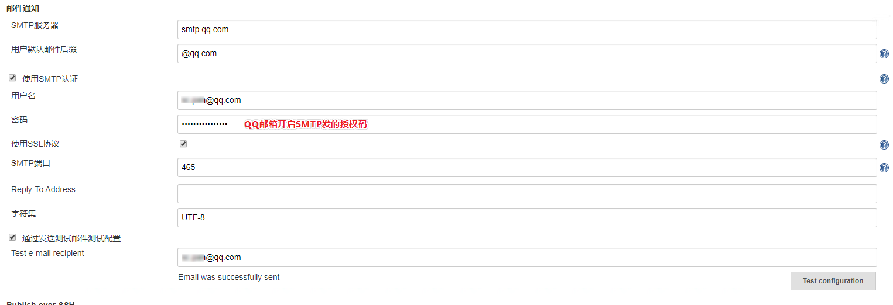
测试成功会发一个测试邮件
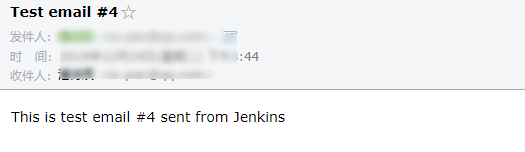
2. 项目邮件配置
在项目配置的构建完成中添加邮件提醒
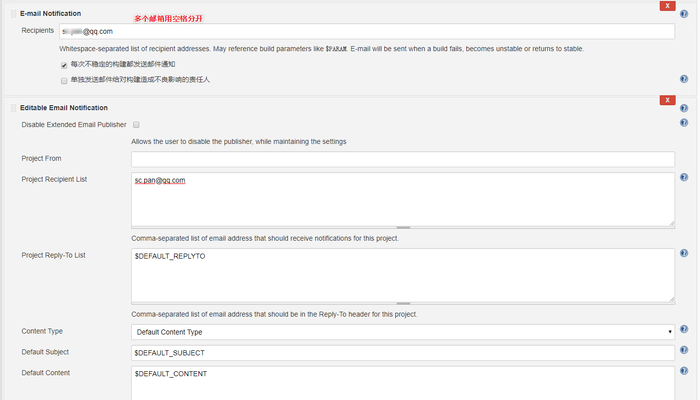
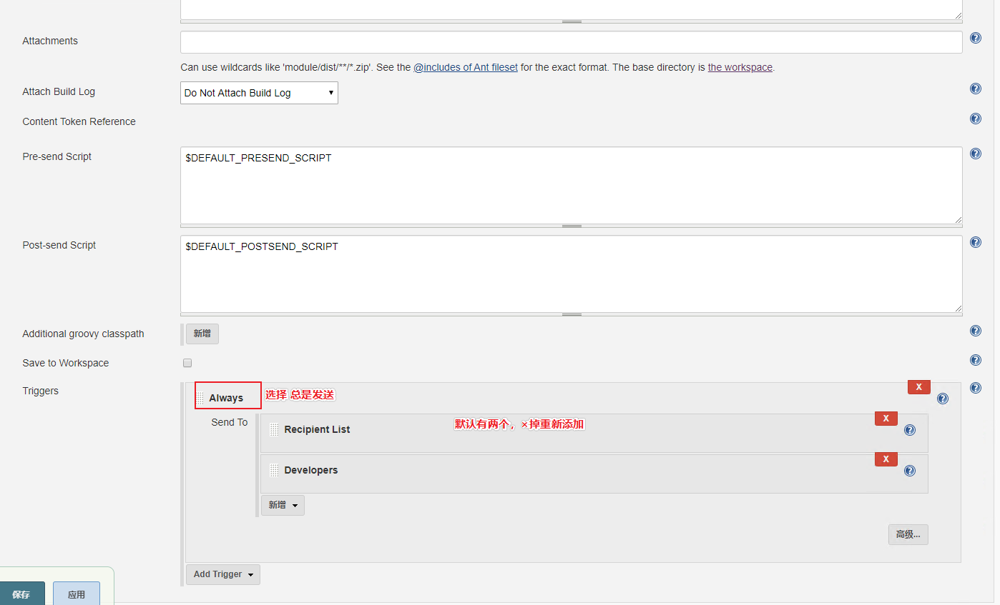
最终收到的邮件：
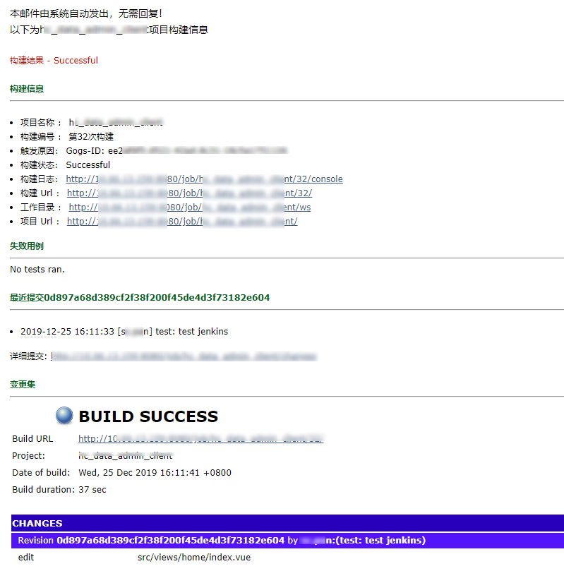